CÔNG TY LẮP CAMERA WIFI QUẬN 7 GIÁ RẺ
Công ty lắp camera wifi Quận 7 giá rẻ tiết kiệm chi phí An Thành Phát Chuyên lắp camera wifi Quận 7 cho cửa hàng văn phòng công ty, gia đình , kho hàng, lắp camera wifi Quận 7 tiết kiệm chi phí cho hộ kinh doanh gia đình, Lắp camera wifi là giải pháp tiết kiệm dây có nhiều chức năng tích hợp gia rẻ khi lắp đặt camera với số lượng 1 hoặc 2 camera. Công ty camera wifi tại Quận 7 Luôn lắp camera cho khách hàng những sản phẩm camera wifi chính hãng.
DỊCH VỤ LẮP CAMERA TẠI QUẬN 7.
LẮP CAMERA GIÁM SÁT GIA ĐÌNH QUẬN 7
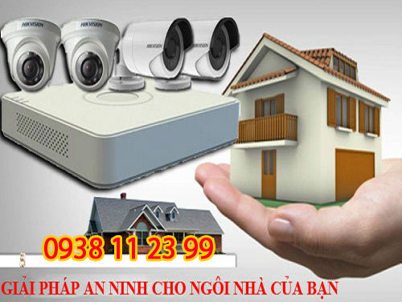
Lắp camera giám sát gia đình giá rẻ là một trong những giải pháp bảo vệ An Ninh hiệu quả cho gia đình được lựa chọn hàng đầu ngày nay. Lắp camera giám sát gia đình tại Quận 7 thường sử dụng những thương hiệu camera quan sát chất lượng sử dụng lâu dài, Giám sát qua điện thoại từ xa ổn định là tiêu chí đặt lên hàng đầu khi lắp camera gia đình tại Quận 7. Giá rẻ lá một phần tiêu chí ổn định khi giám sát từ xa là giá trị quan trọng hơn để đảm bảo an nhinh cho gia đình bạn tại Quận 7. An Thành Phát Luôn bên bạn khi cần.
LẮP ĐẶT CAMERA NHÀ XƯỞNG QUẬN 7
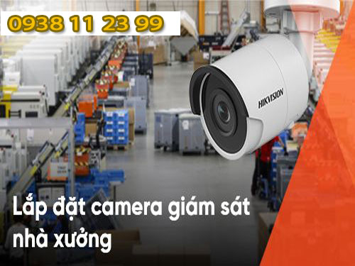
Lắp camera giám sát nhà xưởng tại Quận 7 An Thành Phát có nhiều kinh nghiệm lắp camera giám sát hiệu quả giám sát từ xa, dịch vu lắp camera nhà xưởng giá rẻ dịch vụ tốt giám sát từ xa hiệu quả, Lắp camera giám sát tại Quận 7 giá rẻ chuyên dụng cho nhà xưởng, Công ty lắp camera giám sát nhà xưởng nhiều kinh nghiệm giá rẻ hiệu quả giám sát từ xa ổn định , camera rõ nét tiết kiệm chi phí, Lắp camera nhà xưởng tại Quận 7 với quy mô lớn giám sát qua điện thoại quản lý từ xa, Công ty camera An Thành Phát chuyên lắp camera nhà xưởng giá rẻ tại Quận 7.
LẮP CAMERA GIÁM SÁT KHO QUẬN 7
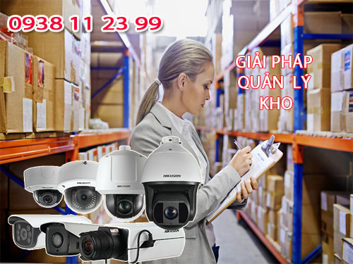
Lắp camera giám sát kho hàng Giá rẻ Quận 7 công ty camera An Thành Phát luôn tư vấn khách hàng sử dụng những dòng sản phẩm camera chính hãng , Dịch vụ lắp camera quan sát kho hàng chất lượng uy tín nhất tại Quận 7 dịch vụ tốt và ổn định giúp giám sát quản lý kho hàng từ xa ổn định sử dụng camera quan sát chính hãng chất lượng tốt trong điều kiện thiếu sáng, giúp giám sát chi tiết khi cần. Quận 7 là một trong những khu vực tập trung nhiều kho hàng lớn và giải pháp giá rẻ tiết kiệm luôn được đặt lên hàng đầu khi lắp camera kho hàng tại Quận 7.
LẮP CAMERA WIFI TẠI QUẬN 7 GIÁ RẺ
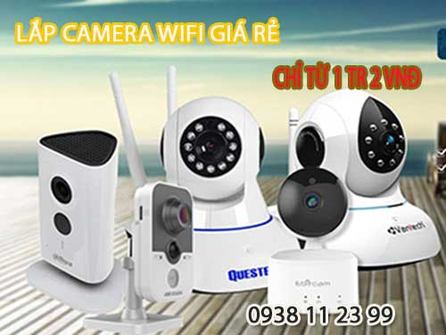
Lắp đặt camera wifi tại Quận 7 thường dùng lắp đặt cho những dự án nhỏ như, Lắp camera wifi văn phòng nhỏ giá rẻ tại Quận 7, lắp camera giám sát gia đình tại Quận 7 thường dùng 1 hoặc 2 camera. lắp camera wifi cho căn hộ tại Quận 7 đây là những giải pháp lắp camera tiết kiệm chi phí trên địa bàn Quận 7 sử dụng camera quan sát wifi không dây giám sát qua mạng điện thoại là chủ yếu,Lắp camera wifi tại Quận 7 giá rẻ tiết kiệm chi phí.
LẮP CAMERA GIÁM SÁT VĂN PHÒNG QUẬN 7
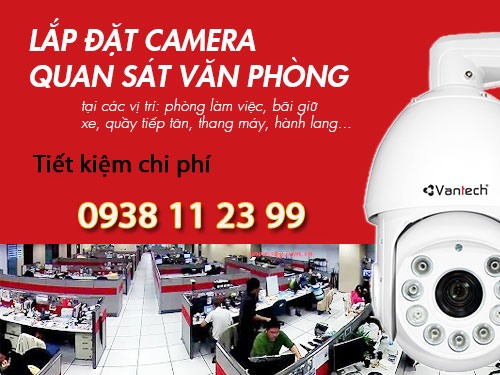
Lắp camera giám sát văn phòng tại Quận 7 là một trong những dịch vụ công ty camera An Thành phát triển khai thông thường sử dụng cho những công ty dịch vụ có văn phòng đặt tại trụ sở Quận 7. Thông thương camera giám sát văn phòng thường sử dụng những gói camera thông dụng giá rẻ, tùy vào đặt điểm của mỗi văn phòng có thể nâng cấp lên 1 camera có thu âm để phù hợp việt giám sát quản lý nhân viên, Lắp camera giám sát văn phòng tại Quận 7 giá rẻ giám sát từ xa qua điện thoại ổn định là tiêu chí hàng đầu.
LẮP CAMERA GIÁM SÁT CỬA HÀNG TẠI QUẬN 7
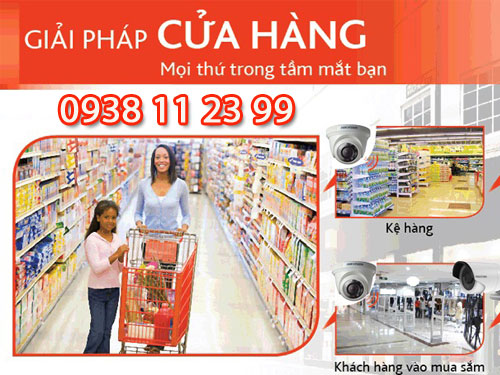
Lắp camera giám sát cửa hàng tại Quận 7 thường sử dụng những gói camera giá rẻ phù hợp với từng nhu cầu kinh doanh, Thông thường cửa hàng sử dụng gói camera 4,5tr bộ 4 camera chất lượng hình ảnh FULL HD 1080P, Lắp camera giám sát cửa hàng tại Quận 7 bảo hảnh 24 tháng tận nơi dịch vụ tốt nhất đổi sản phẩm trong 12 tháng nếu lỗi về thiết bị duy nhất tại An Thành Phát, Công ty lắp camera cửa hàng giá rẻ tại Quận 7 uy tín hàng đầu dịch vụ tốt nhất giải pháp giám sát quản lý cửa hàng hiệu quả. Lắp camera cửa hàng tại Quận 7 nhiều kinh nghiêm.
LẮP CAMERA QUÁN ĂN TẠI QUẬN 7
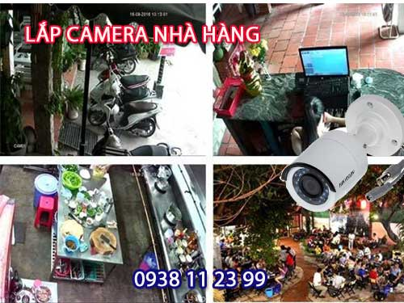
Lắp camera giám sát quán ăn , nhà hàng tại Quận 7 ngày nay cũng phát triển mạnh, thông thường lắp camera quán ăn tại Quận 7 công ty thường sử dụng những dạng camera thân ống hồng ngoại hổ trợ giám sát chế độ thiếu ánh sáng tốt, Việc lắp đặt camera quan sát cho quán ăn tại Quận 7 thường lắp đặt nhanh gọn đảm bảo nhà hàng quán ăn vẫn hoặt động trong suốt quá trình lắp đặt camera tại Quận 7, Những vị trí lắp camera quán ăn tại Quận 7 như, quày thu ngân, trông xe, kho nguyên vật liệu và sảnh.
LẮP CAMERA GIÁM SAT QUA ĐIỆN THOẠI QUẬN 7
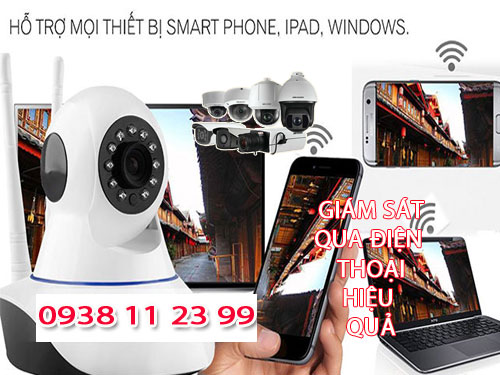
Lắp camera giám sát tại Quận 7 qua điện thoại từ xa hiện nay đa phần là su hướng để đảm bảo an ninh gia đình văn phòng, tuy nhiên lựa chọn những dòng camera giám sát từ xa ổn định là điều cần thiết, dĩ nhiên hiện nay camera giám sát nào cũng có thể xem qua mạng từ xa bằng điện thoại , còn vấn đề ổn định hay không là do công nghệ cấu thành. để tìm hiểu thêm bạn Điện Thoại: 0938 1 12 3 99 để được tư vấn lựa chọn những dòng camera quan sát phù hợp ổn định khi xem từ xa bằng điện thoại. Giải pháp tên miền hay Cloud đều có những ưu điểm riêng.
LẮP ĐẶT CAMERA TRÔNG TRẺ QUẬN 7
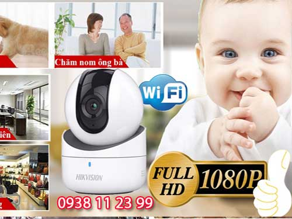
Lắp camera giám sát trẻ nhỏ tại Quận 7 thường lắp đặt ở những căn hộ nhà riêng , đặt biệt với những gia đình mới sinh em bé thuê người giúp việc hoàn toàn không yên tâm do đó việc lắp camera giám sát trẻ để đảm bảo tình trạng con được chăm sóc tôn an tâm hơn trong công việc, Lắp camera giám sát trẻ nhỏ ở Quận 7 công ty camera An Thành Phát thường tư vấn lắp đặt những camera giám sát có thích hợp micro ghi âm để có thể nghe âm thanh từ điện thoại.
LẮP CAMERA WIFI NGOÀI TRỜI KBVISION TẠI Quận 7
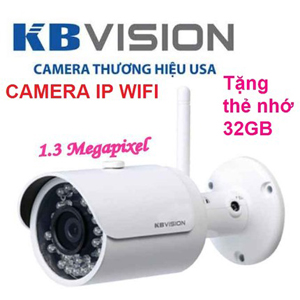
Lắp camera wifi kbivision quận 7
Một số trường hợp lắp camera wifi ngoài trời như Lắp camera wifi trước cổng nhà, lắp camera wifi trước cổng công ty, lắp camera wifi trước cổng cửa hàng lắp camera wifi cho kho hàng, lắp camera wifi xưởng sản xuất
Giá lắp camera wifi Quận 7 rẻ 2.200.000 VNĐ Tặng thẻ 32GB
Thông số kỹ thuật Camera wifi không dây ngoài trời Kbvision KH-N1301W:
– Cảm biến hình ảnh: 1.3 Megapixel
– Kết nối WIFI chuẩn Wi-Fi (IEEE802.11b/g/n) khoảng cách 50m không vật cản
– Chuẩn nén hình ảnh: H.264 và MJPEG
– Ghi hình: 25/30fps 1.0M (1280 × 960)
– Ống kính: 3.6mm (góc nhìn 75°)
– Tầm xa hồng ngoại: 30m
– Hỗ trợ cân bằng ánh sáng, bù sáng, chống ngược sáng, chống nhiễu 2D-DNR, cảm biến ngày/đêm giúp camera tự động điều chỉnh hình ảnh và màu sắc đẹp nhất phù hợp nhất với mọi môi trường ánh sáng
– Hỗ trợ thẻ nhớ Micro SD lên đến 128GB
– Hỗ trợ Cloud không cần cài đặt cấu hình mạng ,dễ dàng quan sát qua phần mềm trên điện thoại , Server tại Việt Nam giúp truyền tải hình ảnh nhanh và ổn định hơn
– Hỗ trợ 20 user truy cập cùng lúc
– Chuẩn chống bụi và nước IP 6 7
Công ty lắp cameraa wifi Quận 7 An Thành Phát luôn tư vấn khách hàng sử dụng những dòng sản phẩm camera wifi chất lượng nhất sử dụng cho công ty văn phòng và gia đình. tiết kiêm chi phí , lắp camera wifi không dây tại Quận 7 chọn thương hiệu camera wifi KBVISION là lựa chọn cho hình ảnh đẹp chất lượng kết nối ổn định.
LẮP CAMERA WIFI GIÁ RẺ Quận 7 QUESTEK
công ty Lắp camera wifi questek Quận 7
Lắp camera wifi tại Quận 7 giá rẻ chọn dòng sản phẩm camera wifi questek chất lượng. Một số ưu điểm dòng camera wifi nên lắp đặt tại Quận 7 thương hiệu questek như: Âm thanh 2 chiều, xoay 360 độ, kết nối wifi ổn định, hổ trợ kết nối có dây và không dây, camera wifi tích hợp báo động lắp giá rẻ tại Quận 7.
Giá lắp đặt camera wifi Quận 7 rẻ 1.500.000 VNĐ Tặng thẻ nhớ 32GB
Đây là dòng camera wifi chât lượng nên lắp camera wifi này khu vực Quận 7 vì tiết kiệm chi phí thương hiệu questek gần Quận 7.
Cấu hình camera wifi questek
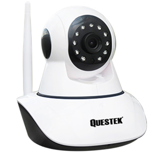
Camera IP Wifi Questek QOB-922IP hồng ngoại 1.3 Megapixel, Xoay 360 độ
- Hỗ trợ thẻ nhớ 64GB
- Cảm biến hình ảnh: HD 960P ( 1.3MP)
- Độ phân giải: 1.3 MP , Xoay 360 độ
- Độ nhạy sáng: 0.01 Lux
- Giám sát: IE, Firefox, Chrome, CMS....
- Hồng ngoại: 11 Leds@5mm
- Tầm xa hồng ngoại: 10 ~ 15 m
- Hỗ trợ Cloud, kết nối không dây Wifi , dễ dàng kết nối , dễ dàng thao tác điều khiển , Âm thanh: Micro.
- Kết nối tiện lợi, Chỉ cần cắm nguồn và sử dụng phần mềm điện thoại để search Wifi sẽ cấp IP cho Camera.
- Kết nối: RJ45, Wireless
- Nguồn: 5V DC
- Kích thước: 10,3*11*11,2cm
Công ty lắp camera wifi Quận 7 An Thành Phát chuyên lắp camera wifi chính hãng Questek Kết nối ổn định với 2 phương thức . Kết nối không dây và kết nối có dây. Lắp camera wifi giá rẻ Questek là dòng sản phẩm phù hợp lắp camera wifi cho văn phòng , lắp camera wifi cửa hàng tại Quận 7 tiết kiệm chi phí sử dụng hàng camera chính hãng tích hợp báo động chống trộm. với chi phí lắp camera wifi 1.500.000 VNĐ thì đây là lựa chọn tốt khi lắp 1 camera wifi sử dụng lâu dài.
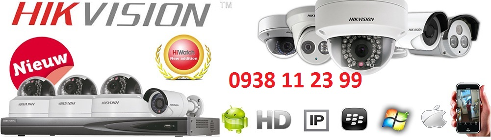
TƯ VẤN KỸ DỊCH VỤ LẮP CAMERA QUẬN 7Việc tư vấn cho khách hàng sản phẩm phù hợp với nhu cầu, đảm báo tôi ưu nhất, tiết kiệm nhất về mặt kinh phí là một trong những yêu cầu bắt buộc đối với nhân viên kỹ thuật cũng như nhân viên kinh doanh tại An Thành Phát CCTV. Chúng tôi luôn đặt lợi ích của khách hàng lên trên để đưa ra các giải pháp lắp đặt camera quan sát phù hợp nhất. Quý khách hàng có nhu cầu TƯ VẤN LẮP ĐẶT CAMERA TẠI Quận 7, Có thể liên hệ với chúng tôi quan điện thoại 0938 11 23 99 hoặc congngheanthanhphat@gmail.com. Công ty sẽ tận tâm tư vấn mọi thắc mắc cho quý khách hàng, kể cả khi quý khách chọn một đơn vị khác lắp đặt chúng tôi vẫn luôn vui vẻ.
GIÁ TỐT NHẤT THỊ TRƯỜNG: Với vai trò tổng đại lý phân phối camera, chúng tôi có mối quan hệ mật thiết với các hãng, các nhà sản xuất lớn nhất trong lĩnh vực camera quan sát tại tphcm. Do đó chính sách giá luôn có sự hỗ trợ đặc biệt. An Thành Phát CCTV luôn cam kết luôn có giá tốt nhất thị trường cho mọi dòng sản phẩm camera quan sát tất cả các hãng VANTECH, QUESTEK,
TẠI SAO BẠN CHỌN DỊCH VỤ SỬA CAMERA QUẬN 7 – An Thành Phát?
Một trong những công ty tiên phong trong lĩnh vực sửa chữa, bảo trì và LẮP ĐẶT HỆ THỐNG CAMERA
Đội ngũ kỹ thuật viên chuyên nghiệp, tận tâm
Luôn dùng những linh kiện tốt nhất, hàng chính hãng
Chế độ hậu mãi, bảo hành tốt nhất
Nếu quý khách sử dụng dịch vụ sửa camera tại nhà quận 7 – An Thành Phát thường xuyên sẽ được chúng tôi ưu đãi giá tốt nhất. Vì mục tiêu của chúng tôi không phải là muốn thu hút khách hàng trong thời gian ngắn, mà chúng tôi muốn cùng gắn bó với khách hàng, để khách hàng luôn tin dùng, tín nhiệm và sử dụng dịch vụ sửa camera tại nhà An Thành Phátmột lần và nhiều lần nữa,…
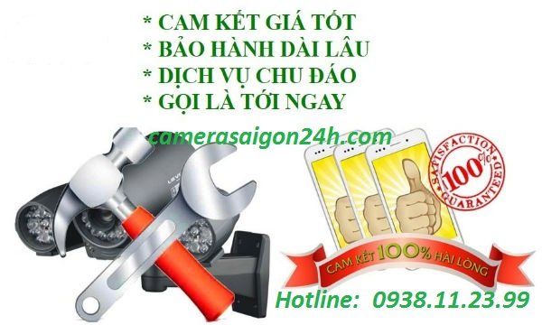
Công ty Lắp camera quận 7 nào uy tín có dịch vụ chăm sóc khách hàng tốt và chi phí lắp camera phải chăng cho doanh nghiệp, nhà xưởng? Quận 7 nổi tiếng là nơi tập trung các khu công nghiệp lớn, khu đô thị mới và các công viên giải
Công ty lắp camera giá rẻ quận 7 với chi phí thấp, thương hiệu uy tín nhiều năm trong lĩnh vực camera quan sát tại TPHCM. Tại sao khách hàng chọn chúng tôi lắp camera giá rẻ quận 7. An Thành Phát là đơn vị uy tín, có nhiều năm kinh nghiệm
LẮP CAMERA QUẬN 1 GIÁ RẺ 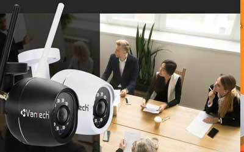
Lắp camera quan sát quận 1 công ty An Thành Phát thường lắp đặt camera cho cửa hàng, văn phòng và nhà phố . sử dụng những camera quan sát thương hiệu tốt hoặt động ổn định, Hình ảnh chất lượng FULL HD 1080P có thệ giám sát từ xa hình ảnh HD công nghệ mới.
LẮP ĐẶT CAMERA QUẬN 2 
Lắp đặt camera quan sát tại quận 2 thường lắp những dự án căn hộ cao cấp sử dụng camera wifi có chất lượng tốt kết nối giám sát từ xa ổn định, đặt biệt những dự án lắp camera cho những khu biệt thự hình ảnh chất lượng tốt công nghệ FULL HD 1080P.
LẮP CAMERA QUAN SÁT QUÂN 3 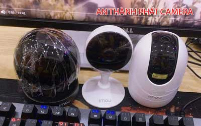
Lắp camera quan sát quận 3 giá rẻ sử dụng camera chính hãng lắp đặt cho những dự án như: shop thời trang, cửa hàng, nhà phố , với những dự án camera quan sát quận 3 chọn camera giá rẻ tiết kiệm phù hợp cho những điều kiện kinh doanh không ổn định cho cửa hàng.
LẮP CAMERA QUẬN 4 UY TÍN 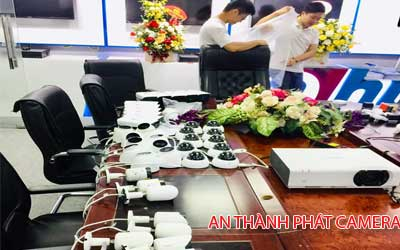
Công ty lắp camera quan sát tại quận 4 giá rẻ camera giám sát từ xa công nghệ mới sửa chửa lắp đặt camera quan sát giá rẻ tại quận 4 công nghệ mới chuyên lắp camera quan sát quận 4 chuyên lắp cho văn phòng giá rẻ chất lượng tốt, chuyên thi công camera văn phòng giá rẻ chất lượng.
LẮP CAMERA QUẬN 5 GIÁ RẺ 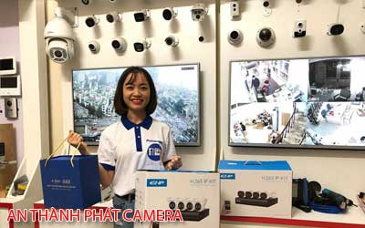
lắp camera quan sát quận 5 giá rẻ tiết kiệm chi phí chọn công ty An Thành Phát là một trong những công ty camera uy tín sử dụng camera chính hãng giám sát từ xa ổn định, Thường lắp camera quan sát cho cửa hàng nhà phố công nghệ mới giám sát từ xa ổn định tiết kiệm.
LẮP ĐẶT CAMERA QUẬN 6 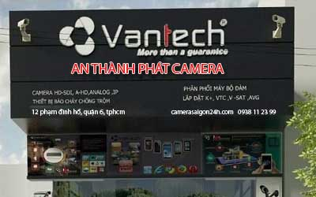
Dịch vụ lắp đặt camera quan sát tại quận 6 giá rẻ sử dụng camera chính hãng chất lượng tốt, sử dụng camera quan sát chính hãng công nghệ HD giám sát qua điện thoại từ xa, Camera quan sát tại quận 6 An Thành Phát là một trong những công ty uy tín chuyên lắp caemra cho cửa hàng.
LẮP CAMERA QUAN SÁT QUẬN 7 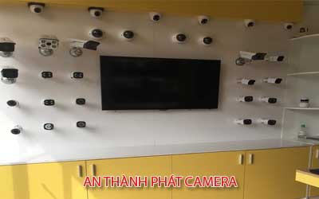
Lắp đặt camera quan sát quận 7 thường phục vụ cho những công trình camera quan sát cho căn hộ cao cấp, cửa hàng buôn bán, văn phòng đại diện và những trường học cao cấp giám sát quản lý từ xa, với nhiều năm kinh nghiệm lắp đặt camera quan sát An Thành Phát luôn phụ vụ tốt những công trình chuyên dụng.
CÔNG TY CAMERA QUẬN 8 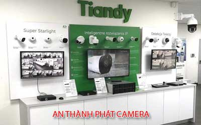
Lắp camera quan sát an ninh quận 8 đến thời điểm hiện tại An Thành Phát đã triển khai rất nhiều hệ thống camera giám sát nhà phố, camera giám sát sát khu phố với chất lượng hình ảnh sáng đẹp, thương hiệu camera tốt hàng đầu thế giới, An Thành Phát là công ty camera uy tín hàng đầu lắp đặt camera quan sát chính hãng giá rẻ
CAMERA QUẬN 9 GIÁ RẺ 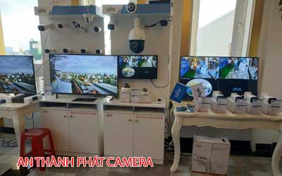
Lắp camera quan sát gia đình văn phòng tại quận 9 nên chọn công ty camera An Thành Phát là lựa chọn tốt camera quan sát công nghệ mới giá rẻ camera quan sát hình ảnh HD giám sát từ xa qua mạng điện thoại tại quận 9 chất lượng tốt giá rẻ .
LẮP CAMERA QUẬN 10 
Lắp đặt đặt camera quan sát giá rẻ tại quận 10 dịch vụ lắp camera quan sát cho cửa hàng giá rẻ uy tín sử dụng camera chính hãng chất lượng FULL HD phù hợp lắp camera quan sát cho cửa hàng khu vực quận 10 tiết kiệm chi phí giám sát từ xa ổn định.
LẮP CAMERA QUẬN 11 GIÁ RẺ
Lắp dặt sử chửa bảo hành camera quan sát tại quận 11 uy tín giá rẻ camera giám sát qua mạng điện thoại từ xa ổn định, Công ty camera An Thành Phát chuyên thi công lắp đặt camera quan sát gia đình cửa hàng văn phòng và căn hộ tại khu vực quận 11 giá rẻ tiết kiệm chi phí giám sát ổn định.
LẮP ĐẶT CAMERA QUẬN 12
Thi công lắp đặt camera quan sát tại quận 12 giá rẻ camera quận 12 công ty An Thành Phát thường thi công cho nhà xưởng, kho hàng và nhà vườn sử dụng camera có hồng ngoại giám sát tố, hổ trợ giám sát thiếu ánh sáng vẫn thấy màu đây là lựa chọn camera chất lượng.
LẮP CAMERA BÌNH THẠNH 
Dịch vụ tư vấn lắp đặt camera quan sát uy tín khu vực quận Bình Thạnh giá rẻ sử dụng camera quan sát thương hiệu tốt kbvision, Dahua, hikvision giám sát qua mạng điện thoại từ xa ổn định kỹ thuật lắp đặt tận nơi bảo trì bảo hành 24 tháng.Giải pháp tiết kiệm chi phí giám sát từ xa ổn định là tiêu chí hàng đầu
LẮP CAMERA BÌNH TÂN GIÁ RẺ
Với nhiều năm kinh nghiệm lắp camera quan sát cho nhà xưởng kho hàng trong khu vực quận bình tân, bộ phân kỹ thuật tư vấn giải pháp với nhiều năm kinh nghiệm luôn mang đến cho khách hàng những giải pháp tiết kiệm chi phí hoặt động ổn định giá rẻ sử dụng camera chính hãng.
LẮP CAMERA TÂN BÌNH
Khu công nghiệp Tân Bình, khu dân cư cao cấp gân sân bay, chợ tân bình là những dự án lắp đặt camera quan sát quan trọng của An Thành Phát với tiêu chí giá rẻ và mang lại hiệu quả cao gân trụ sở công ty là một trong những lợi thế để bảo trì và dịch vụ sau bán hàng tốt nhất.
CAMERA QUAN SÁT TẠI HÓC MÔN
Quận Hóc môn là một trong những quận huyên tốc độ phát triển cao lắp đặt camera quan sát tại Quận Hóc Môn cũng có nhiều lựa chọn trong đó An Thành Phát là một trong những công ty camera hàng đầu chuyên thi công lắp đặt camera chính hãng giám sát từ xa hổ trợ khách hàng tốt nhất tại Hóc môn củ chi, Công ty lắp camera tại hóc môn giá rẻ.
LẮP CAMERA TÂN PHÚ GIÁ RẺ 
Lắp camera quan sát quận tân phú là nơi tập trung nhiều công ty camera quan sát là quận đang phát triển chính vì vây thường sử dụng những sản phẩm camera giám sát an ninh gia đình, cửa hàng và văn phòng với giá rẻ và tiết kiệm chi phí, camera giám sát ổn định qua điện thoại máy tính từ xa, sử dụng camera quan sát chính hãng hình ảnh sắt nét.
LẮP CAMERA TẠI BÌNH DƯƠNG GIÁ RẺ
lắp camera wifi tại bình dương giá rẻ tiết kiệm chi phí phù hợp cho gia đình văn phòng và cửa hàng sử dụng số lượng ít từ 1 hoặc 2 camera quan sát thì đây là giải pháp tiết kiệm chi phí, lắp camera wifi tại Bình Dương nhiều chức năng tiện dụng giám sát từ xa qua mạng điện thoại ổn định phù hợp với chi phí đầu tư.
CAMERA QUAN SÁT GÒ VÂP
Lắp Đặt CAMERA Quan Sát Quận Gò Vấp nhanh và rẻ Nhất sử dụng camera quan sát chính hãng, Công ty chuyên lắp camera quan sát khu vưc gò vấp cho văn phòng gia đình cửa hàng, sử dụng camera quan sát công nghệ mới, lắp camera quan sát gò vấp tiết kiệm chi phí dịch vụ sau bán hàng tốt nhất, Camera quan sát sử dụng công nghệ mới giám sát ổn dịnh.
CÔNG TY LẮP CAMERA TẠI PHÚ NHUẬN
Lắp camera quan sát quận phú nhuận giá rẻ , giải pháp camera quan sát cửa hàng nhà phố và văn phòng sử dụng camera quan sát chính hãng giá rẻ dịch vụ bảo hành sửa chửa camera quan sát tại quận phú nhuận uy tín nhanh chống và tiết kiệm chi phí cho khách hàng, Gọi Ngay 0938 11 23 99 để được tư vấn giải pháp lắp đặt camera quan sát phù hợp giá rẻ.
Tại sao khách hàng chọn chúng tôi lắp camera giá rẻ quận 7.
An Thành Phát là đơn vị uy tín, có nhiều năm kinh nghiệm trong việc lắp camera cho khách hàng đặc biệt là nhà xưởng, khu công nghiệp, văn phòng công ty.
Là đối tác phân phối camera hàng đầu nên chúng tôi có lợi thế là lấy được nguồn hàng chính hãng với giá thấp từ đó chúng tôi cung cấp cho khách hàng sẽ cạnh tranh về giá hơn.
Thiết bị quan sát được An Thành Phát nhập khẩu có chất lượng cao của nhiều thương hiệu camera nổi tiếng, bảo hành lên đến 2 năm, được nhiều khách hàng tin tưởng lựa chọn sử dụng.
Qúa trình lắp đặt nhanh chóng, tư vấn miễn phí, đưa ra các giải pháp hiệu quả.
Khách Hàng Mới Trong Khu Vực Quận 7
- Khách Lắp Camera chú thanh Địa điểm lăp đặt camera 136 Lê Văn Lương, p Tân Hưng Quận 7 Sử dụng Dịch vụ camera quan sát 1 đầu ghi kx-7104sd6 - 2 camera 2111c4- 1 ổ cứng 250G
- Lắp Cameraquan sát A Thanh Địa điểm lăp đặt camera 216 hà huy tập, khu nam nhiên 3, p. tân phong, quận 7 Sử dụng Dịch vụ camera quan sát 1 cam DS-2CD2T543G0-I8
- Khách Lắp Camera Địa điểm lăp đặt camera lầu 4 p 3a.01 chung cư star hill , Quận 7 Sử dụng Dịch vụ camera quan sát 1 camera kx-h2 the 128
- Khách Lắp Camera Chị Phương Địa điểm lăp đặt camera Tầng 11-10 Chung cư River City số 25 Đào Trí ,Phú Mỹ , Quận 7 Sử dụng Dịch vụ camera quan sát 1 CAMERA KX-H10WN
- Lắp Camera anh Tuyến Địa điểm lăp đặt camera 32 Đường số 2 Phường Tân Hưng Quận 7 Sử dụng Dịch vụ camera quan sát 1 đầu ghi kx-8116h1- 3 camera dome kx-2k12cp 8 camera kx-2k11c-- 1 ổ cứng 2TB
- Khách Lắp Camera Anh khảii Địa điểm lăp đặt camera 91 Phan kim ích , p tân phog quận 7 Sử dụng Dịch vụ camera quan sát 1 cam siepen S6203Y-WR
- Khách Lắp Camera Anh Nguyên Địa điểm lăp đặt camera 92 Gò Ô Môi - Lô 7- Ngã Tư Chợ Phú Thuận - Q7 <--> 435/21/7 khu phố 1B , Huỳnh Tấn Phát ,Tân Hưng Thuân ,Quận 7 Sử dụng Dịch vụ camera quan sát 2 camera yoosee + 32G
- Lắp Camera Công Ty TNHH Giao Nhận Và Vận Tải Minh Việt Địa điểm lăp đặt camera 51 Đường số 2, Phường Tân Phú, Quận 7, Tp HCM Sử dụng Dịch vụ camera quan sát Lắp 1 đầu ghi KX-7104D6, 1 camera KX-2007ePA, 2 camera KX-2004CA, ổ cứng 2000GB, Đổi đầu ghi 8 KX-7108SD6, 3 camera KX-2003C4,( 2/11/2018 )
- Khách Lắp Camera A Khang Địa điểm lăp đặt camera 873 huỳnh tấn phát.p phú Thuận, quận 7 Sử dụng Dịch vụ camera quan sát đầu ghi DS-7104 HGHI -F1, 1 cam DS-2CE56D0T-IRP, 1 cam DS-2CE16D0T-IRP, ổ cứng 250GB (mk modem:0756774815)
- Khách Lắp Camera quan sát A Bảo Địa điểm lăp đặt camera số 5 Hà Huy Tập,p Tân phong, quận 7 Sử dụng Dịch vụ camera quan sát đầu ghi KX-8108N2, 1 cam kx-2012N, kx-H13WN, 1 cam kx-H13PWN
- Khách Lắp Camera Võ Văn Thắng Địa điểm lăp đặt camera 176/14/11 đường nguyễn thị thập,p Bình Thuận, quận 7 Sử dụng Dịch vụ camera quan sát 1 đầu ghi KX-7104TD5,1 ổ cứng Seagate HDD 1000GB,4camera KX-1302c,am tường đồng trục
- Khách Lắp Camera chhị tâm 0963226196 Địa điểm lăp đặt camera 4 đào trí p.phú thuận quận 7 Sử dụng Dịch vụ camera quan sát đầu fghi KX-7104TD6, 4 cam dume KX-1302C. Ổ 500GB
- Lắp Camera quan sát anh thang Địa điểm lăp đặt camera 77/50/4 chuyen dung 9 quan 7 Sử dụng Dịch vụ camera quan sát ten mien
- Khách Lắp Camera anh ( của chi bé ) Địa điểm lăp đặt camera 134 nguyễn thị thập quận 7 lầu 3 Sử dụng Dịch vụ camera quan sát đầu ghi kb kx-7104TD5. 4camera kx 2012c4.ổ cuengs 500G
- Khách Lắp Camera anh bui Địa điểm lăp đặt camera 4b đường 42 tân quy quận 7 Sử dụng Dịch vụ camera quan sát 1 đầu ghi 4 td5 4 camera 6300b 1 cam ip kb ổ cứng 1tb
- Lắp Camera khu phố quận 7 Địa điểm lăp đặt camera đường phạm hữu lầu , quận 7 Sử dụng Dịch vụ camera quan sát tạm ứng trước
- Khách Lắp Camera cty TNHH Sản Xuất,TMDV Ngon Mỗi Ngày Địa điểm lăp đặt camera SD4 khu Cảnh Vien 1,đường phố Tiểu Nam,gần Hồ Bán Nguyệt,quận 7 Sử dụng Dịch vụ camera quan sát bắt bộ 7 camera DS-2CE56DOT-IR,CAM 2.0MP.ổ cứng 1000GB,đầu ghi 8 kênh DS7208HQHI-F1/N
- Khách Lắp Camera MR.Ban Địa điểm lăp đặt camera 99 nguyễn thị thập- quận 7 Sử dụng Dịch vụ camera quan sát bắt 4 camera dome(2 camera 3118A,2 camera 112AHD)
- Lắp Camera chị diệu Địa điểm lăp đặt camera 220b lê văn lương, quận 7 Sử dụng Dịch vụ camera quan sát lắ 2 camera ngụy trang, đầu ghi tùng, ổ cứng 250g
- Khách Lắp Camera quan sát anh sĩ Địa điểm lăp đặt camera 30/105 lâm văn bền-quận 7 Sử dụng Dịch vụ camera quan sát bắt thêm 2cameta 122AHD cho ng ta
- Khách Lắp Camera Địa điểm lăp đặt camera 36 Lý Phục Man,quận 7 Sử dụng Dịch vụ camera quan sát bán 1 đầu ghi 4 kênh và 2 camera,1 tên miền
- Lắp Camera Địa điểm lăp đặt camera BC2-5 Cảnh Viến,tòa Nhà Chung Cư trên đường Nguyễn Lương Bằng,quận 7 Sử dụng Dịch vụ camera quan sát bắt bộ 4 camera HIKVISON 1.0MP,đầu ghi 4 kênh,ổ cứng 500gb
- Khách Lắp Camera quan sát Thuận Thảo Địa điểm lăp đặt camera 647 Nguyễn Oanh,quận 7 Sử dụng Dịch vụ camera quan sát bắt bộ 4 camera VP-112AHDM ĐẦU GHI 4 KÊNH,Ổ CỨNG 1000GB
- Khách Lắp Camera Anh Thành Địa điểm lăp đặt camera 9C Khu Phồ 2 đường 75 ,phường Tân Phong,quận 7 Sử dụng Dịch vụ camera quan sát bắt bộ 4 camera ,đầu ghi 4 kênh quektek,ổ cứng 250gb,4 camera viền xanh giống vantech hàng của Tùng,800k/cam
- Lắp Camera Nguyễn Phi Kha Địa điểm lăp đặt camera 216 Phạm Thái Bường,quận 7 Sử dụng Dịch vụ camera quan sát băt trọn bộ camera quan sát đầu ghi 8 kênh VP-8160AHDM 6cam trong nhà VP-112AHDM,2cam ngoài trời vp-122ahdm
- Khách Lắp Camera Chị Thúy Địa điểm lăp đặt camera J040 Hưng Vượng 2,Phú Mỹ HƯNG,QUẬN 7 Sử dụng Dịch vụ camera quan sát BẮT BỘ 4 CAMERA ,3 CAMERA VP-112AHD,1 CAM VP-122AHDM,ĐÂU GHI 4 KÊNH,Ổ CỨNG 500GB
- Khách Lắp Camera Chú Trung Địa điểm lăp đặt camera A1 -16 PHÚ MỸ VẰN, QUẬN 7 Sử dụng Dịch vụ camera quan sát bắt bộ 10 camera 4amera cVP-112AHDM,6 camera VP-122 AHDM ĐẦU GHI 16 KÊNH ,Ổ CỨNG 1000GB
- Lắp Camera Anh Đức Địa điểm lăp đặt camera 88/89/23A Nguyễn Văn Qùy,phường Phú Thuận,quận 7 Sử dụng Dịch vụ camera quan sát bắt bộ VP-112AHDM,Ổ CỨNG 500GB,Đầu ghi 4 kênh
- Khách Lắp Camera quan sát Anh Hoàng Địa điểm lăp đặt camera quận 7 Sử dụng Dịch vụ camera quan sát lắp camera màn hình chuông cửa
- Khách Lắp Camera Nguyễn Thị Tưởng Địa điểm lăp đặt camera R4-02 Hưng Phước 2,Tân Phong ,quận 7 Sử dụng Dịch vụ camera quan sát bắt bộ 6 camera thân hikvison dán mã 2.0mp